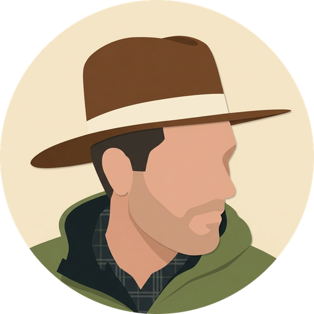
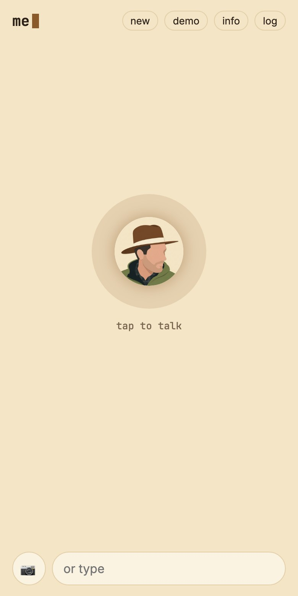
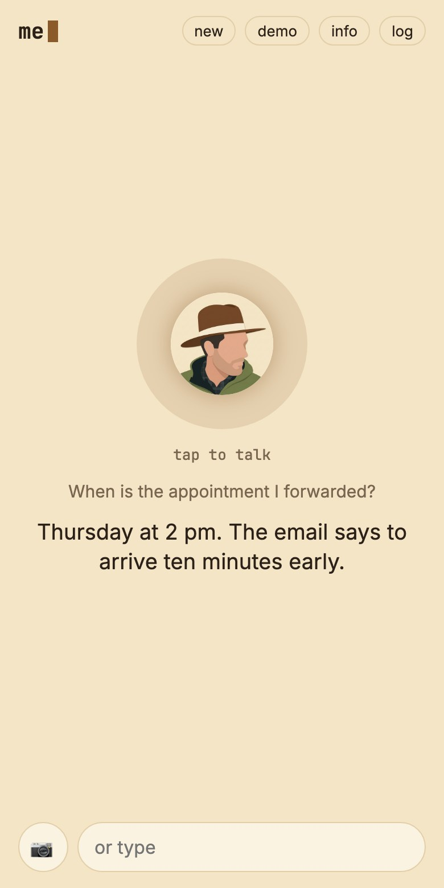

An inbox for your dot
Forward an appointment or a receipt to the dot’s own email address. Its mail tools search what you’ve shared and read individual messages, so a later question can go back to the original details.
// hev me / life
A personal calendar, spending, and the email you choose to forward. hev me brings them into a calm conversation, with a warm earth-colored theme and a voice of its own.
When is the appointment I forwarded?

// inside the app
Captured from the app’s frontend with staged sample content. These previews show the design and an illustrative conversation.


// how the experience comes together
Forward an appointment or a receipt to the dot’s own email address. Its mail tools search what you’ve shared and read individual messages, so a later question can go back to the original details.
Calendar tools and read-only spending tools sit beside that inbox. Calendar changes use a read-back and confirmation. The dot can also hand deeper budget questions to a sub-agent.
The earth palette, portrait, voice, spoken cues, and opening haiku all belong to hev me. Dots provides the voice and text screen, tool handling, permissions, and cards underneath.
The email supplies the detail. Voice makes it easy to ask. The calendar gives the next step somewhere to go.
// make it yours
Start with your day. Choose the tools, the context, and a voice that fits.